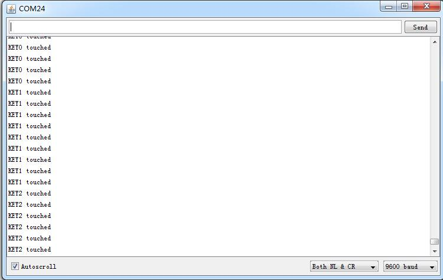

Xadow - Q Touch Sensor
The Q Touch Sensor is a high sensitivity and high noise immunity touch input device.It is based on Atmel AT42QT1070.
The AT42QT1070 modulates its bursts in a spread-spectrum fashion in order to heavily suppress the effects of external noise, and to suppress RF emissions. The QT1070 uses a dual-pulse method of acquisition. This provides greater noise immunity and eliminates the need for external sampling capacitors, allowing touch sensing using a single pin.
Specification
- Operating Voltage: 3 ~ 5.5V
- Operating Current @3.3V: 1mA
- Touch Keys: 7 Keys ; key0 ,key1 ,key2 are on the Xadow PCB bottom side
- Communicating Protocol: I2C
- I2C Address: 0x1B
Interface Function
- ①：Touch key3 , key4 break out
- ②：Touch key5 , key6 break out
- The recommended range for key capacitance Cx is 1 pF – 30 pF. Larger values of Cx will give reduced sensitivity.
- ③：Xadow interface
- ④：On board touch key0
- ⑤：On board touch key1
- ⑥：On board touch key2
Usage
Demo:
When you touch the key pad on the board ,you will see the message from a serial port.
Hardware Installation
- 1） Connect Xadow - Q Touch Senor to Xadow - Main Board
Software Part
- 1) Download the library [Q Touch Library];
- 2) Unzip it into the libraries file of Arduino IDE by the path: ..\arduino-1.0.5\libraries.
- 3) Open the code directly by the path: File -> Example -> getTouchNumber.ino
- 4) Upload the code. Note that you should select the correct board type and COM port.
You can see :

Resource
Copyright (c) 2008-2016 Seeed Development Limited (
www.seeedstudio.com /
www.seeed.cc)
This static html page was created from http://www.seeedstudio.com/wiki